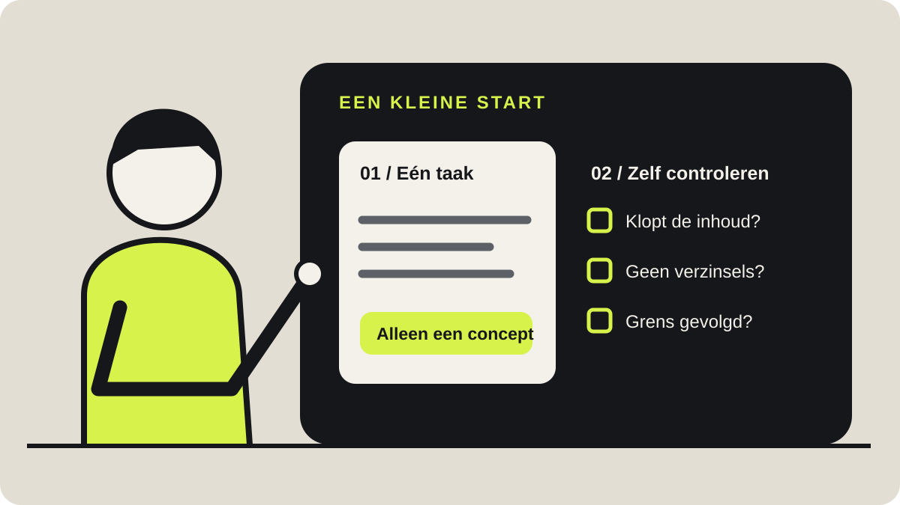

Beginnen met Instinct: geef één taak uit handen
10 oktober 2026
Een AI-assistent gebruiken begint met een gewone vraag. De belangrijkste keuze valt alleen al eerder: welk werk willen we echt uit handen geven? Wie met Instinct begint, heeft meer aan één afgebakende taak dan aan een lange lijst mogelijkheden.

Bij Klaarwijs kiezen we daarom voor een rustige start. We beschrijven wat klaar moet zijn. We geven alleen de informatie die daarvoor nodig is. En we spreken af waar de assistent stopt. Zo zien we of de hulp bruikbaar is, zonder meteen onze hele administratie over te dragen.
Dit artikel gaat over die eerste stap: wat Instinct is, hoe we een opdracht formuleren en hoe we een eerste oefening beoordelen. De voorbeelden zijn zelfbedachte opdrachten, geen uitgevoerde praktijktests. Tijdwinst of foutloze resultaten beloven we dus niet.
Wat is Instinct?
Op zijn website noemt Instinct zichzelf een persoonlijke assistent die we kunnen berichten of bellen. Als voorbeelden staan er onder meer afspraken regelen, boodschappen bestellen en een uitstapje plannen. Dat laat zien wat het product aanbiedt. Het is geen garantie dat elke opdracht in elke situatie lukt.
Voor een beginner telt vooral hoe het contact gaat. We hoeven onze vraag niet als programmeercode te schrijven. In gewone taal leggen we uit welk resultaat we zoeken, welke informatie erbij hoort en welke grenzen we stellen.
Op 9 oktober 2026 verscheen een praktijkbespreking van The Verge. Die beschrijft het gebruik via berichten, ook via WhatsApp. De recensent bespreekt taken die goed gingen, maar ook een voorwaarde die werd gemist bij het zoeken naar zwemlessen. Eén ervaring bewijst niets over de algemene betrouwbaarheid. Ze laat wel zien dat een uitkomst iets anders is dan een gecontroleerde uitkomst.
Daarom zien wij Instinct als hulp bij concrete taken. Met een beperkte opdracht krijgen we iets wat we zelf kunnen beoordelen. Een belofte als "regel mijn hele bedrijf" is daarvoor te groot. Wat valt daar precies onder? Dat is nauwelijks vast te stellen.
Kies werk waarvan we de uitkomst herkennen
Een goede eerste taak heeft een duidelijk begin en een duidelijk einde. Denk aan een korte samenvatting van een openbare tekst, een concept op basis van eigen notities of een lijstje vragen die nog openstaan. Kies iets waarbij we zonder extra onderzoek zien of het antwoord aansluit.
Het liefst kiezen we een taak zonder gevolgen voor anderen. Een conceptmail lezen we voordat iemand hem krijgt. Een samenvatting leggen we naast de oorspronkelijke tekst. Bij zo'n eerste oefening hoeft er nog niets geboekt, betaald of verstuurd te worden.
Minder geschikt om mee te beginnen: een opdracht die vakkennis vraagt die we zelf niet hebben. Een overtuigend antwoord over een ingewikkeld contract is daarmee nog niet juist. En kunnen we het resultaat niet beoordelen, dan leren we weinig over de kwaliteit van de hulp.
We hoeven ook niet meteen allerlei accounts te koppelen. Voor een oefening met een verzonnen tekst is geen toegang tot onze mailbox nodig. Eerst kiezen we de taak. Daarna kijken we of die extra toegang vraagt.
Schrijf op wat klaar betekent
"Help me met mijn administratie" is een onderwerp. Het zegt nog niet wat er moet liggen als het werk klaar is. Een afgebakende opdracht noemt wel iets concreets, zoals een lijst, een samenvatting of een concept, met een duidelijke omvang.
Wij schrijven een opdracht met vier vragen: wat moet het opleveren, voor wie is het, wat mag niet en wanneer is het klaar? Dat is een praktische keuze van Klaarwijs. Instinct schrijft die indeling niet voor, en we zeggen ook niet hoeveel beter een antwoord erdoor wordt.
Bij een samenvatting kan het resultaat vijf punten zijn, voor een collega die de tekst nog niet heeft gelezen. De grens kan zijn dat er geen feiten bij mogen komen. Klaar betekent dan dat elk punt terug te vinden is in de aangeleverde tekst.

Een bruikbare opdracht is bijvoorbeeld: "Vat deze tekst samen voor iemand die het onderwerp niet kent. Gebruik maximaal vijf punten. Voeg geen feiten toe. Zet onderaan wat de tekst niet uitlegt." Daarmee hebben we een concrete maatstaf voor het resultaat.
Een deadline hoort alleen in de opdracht als die ertoe doet. "Voor mijn overleg" zegt weinig zonder tijdstip. Gaat het om een echte planning? Schrijf dan datum en tijd erbij en controleer of de assistent hetzelfde moment heeft begrepen.
Geef informatie, geen vrijbrief
Een assistent kan alleen met onze notities werken als we ze delen. Met een account werken kan alleen als daar toegang voor is. Welke toegang nodig is, hangt af van de opdracht. Laat eerst uitleggen wat er ontbreekt, in plaats van alvast overal toestemming voor te geven.
Volgens de praktijkbespreking van The Verge kan Instinct diensten koppelen en een beveiligde link aanbieden om inloggegevens in te voeren. Voor onze eerste taak houden we het eenvoudiger. We werken met verzonnen gegevens die we zelf rechtstreeks aanleveren. Dan hoeven we minder te delen.
Wachtwoorden horen niet in een gewone chat. Vraagt een taak om toegang, dan vragen we naar de route die daarvoor bedoeld is. En we kijken of die toegang past bij de opdracht, en of we dat account hiervoor willen gebruiken.
Bij werkgegevens komt er nog een vraag bij: mogen we deze informatie delen? Een klantdocument blijft een klantdocument, ook als we het aan een assistent geven. Twijfelen we, dan nemen we een volledig verzonnen voorbeeld en vragen we binnen ons bedrijf welke afspraken gelden.
Een kleine proef met fictieve gegevens vinden wij een betere kennismaking dan een proef met een echte klantmail. We oefenen dezelfde instructie, alleen zonder namen, adressen of vertrouwelijke afspraken. Pas daarna besluiten we of een echte toepassing past.
Spreek het stopmoment af
Een concept schrijven is iets anders dan een bericht versturen. De gevolgen verschillen. Bij ons eerste gebruik maken we dat verschil daarom expliciet. In de opdracht staat dat de assistent alleen voorbereidt en niets naar anderen verstuurt.
Dat geldt ook bij andere handelingen. Een lijst met mogelijkheden is nog geen boeking. Een boodschappenlijst is nog geen bestelling. Een voorstel voor een afspraak is nog geen uitnodiging aan de mensen die erbij horen.
Dit is een afspraak die we zelf maken, geen productgarantie. Als beginner hoef je niet te vertrouwen op een stopmoment dat nergens staat. Schrijf het op: "Maak alleen het concept. Vraag mij voordat je iets verstuurt, boekt, betaalt of verwijdert."

Moeten we later iets goedkeuren, dan kijken we wat we precies goedkeuren. Bij een mail is dat de tekst én de ontvanger. Bij een aankoop ook het bedrag en de voorwaarden. En liggen er meerdere voorstellen, dan is een los "prima" al snel onduidelijk.
Het gaat niet om eindeloos bevestigen van elk detail. Het gaat erom dat we vooraf weten welke stap gevolgen heeft. In onze eerste oefening is dat simpel. Er gaat niets naar buiten, dus we beoordelen alleen de voorbereiding.
Eén oefening, helemaal uitgewerkt
Voor de eerste kennismaking nemen we een fictieve aanvraag aan een tekstschrijver. Er staan geen klantgegevens in en er is geen toegang tot een account nodig. We weten vooraf welke informatie erin staat en welke ontbreekt.
De aanvraag luidt: "We zoeken iemand die drie teksten voor onze website kan schrijven. De teksten zijn bedoeld voor nieuwe bezoekers. We willen graag een voorstel ontvangen. Over de lengte, planning en het beschikbare materiaal hebben we nog niets afgesproken."
We vragen Instinct om een korte conceptreactie. Die moet de aanvraag bevestigen en drie vragen stellen: hoeveel woorden gewenst zijn, wanneer de teksten nodig zijn en welk materiaal er is. Een prijs of leverdatum invullen mag niet.
Deze opdracht kunnen we rechtstreeks gebruiken:
"Maak een conceptreactie op de fictieve aanvraag hieronder. Schrijf vriendelijk en zakelijk, maximaal 120 woorden. Bevestig dat het om drie websiteteksten voor nieuwe bezoekers gaat. Vraag naar de gewenste lengte, deadline en het beschikbare materiaal. Bedenk geen prijs, planning of afspraken. Gebruik alleen de informatie uit de aanvraag. Verstuur niets. Geef onder het concept apart aan welke gegevens ontbreken. Aanvraag: We zoeken iemand die drie teksten voor onze website kan schrijven. De teksten zijn bedoeld voor nieuwe bezoekers. We willen graag een voorstel ontvangen. Over de lengte, planning en het beschikbare materiaal hebben we nog niets afgesproken."
Dit is een oefenopdracht. Het bewijst niet dat Instinct het gewenste antwoord geeft. De uitkomst hebben we niet ingevuld. Zo blijft de oefening eerlijk: je ziet zelf wat er gebeurt en legt het antwoord naast de opdracht.
Beoordeel het antwoord met vaste vragen
Na de oefening kijken we eerst naar de inhoud. Staat er echt dat het om drie websiteteksten gaat? Wordt er gevraagd naar lengte, deadline en beschikbaar materiaal? En is er geen prijs of leverdatum toegevoegd? Dat zie je door opdracht en uitkomst naast elkaar te leggen.
Daarna de vorm. Is de reactie maximaal 120 woorden, en klinkt ze vriendelijk en zakelijk? Een afwijkende toon is iets anders dan een verzonnen afspraak. We noteren daarom apart wat inhoudelijk fout is en wat we alleen anders zouden zeggen.
Tot slot de afgesproken grens. In deze oefening vragen we alleen een concept in de chat. Suggereert het antwoord dat er al iets is verstuurd? Dan zoeken we dat eerst uit voordat we verdergaan. Een statusmelding is geen reden om onduidelijkheid te laten bestaan.
Noteer de opdracht, de datum en het antwoord. Schrijf eronder welke controles slaagden en welke niet. Een ingewikkeld rapport hoeft niet. Een klein overzicht voorkomt al dat een prettig klinkend antwoord je hele oordeel bepaalt.
Tijdwinst meten we bij deze eerste oefening niet. Daarvoor moeten we ook weten hoeveel tijd dezelfde taak zonder assistent kost, inclusief lezen en verbeteren. Zonder die vergelijking blijft "dit bespaart tijd" een indruk. Die presenteren we niet als resultaat.
Verbeter één ding tegelijk
Voldoet het antwoord niet, dan benoemen we precies wat er afwijkt. "Dit is slecht" geeft weinig richting. "Je hebt een leverdatum toegevoegd terwijl die ontbreekt; haal die weg en stel er een vraag over" wijst op iets wat we kunnen controleren.
Wij verbeteren eerst de bestaande opdracht, voordat we een andere toepassing zoeken. Misschien was een grens onduidelijk beschreven. Misschien heeft de assistent een duidelijke grens toch gemist. Pas je één ding tegelijk aan, dan zie je wat het volgende antwoord anders doet.
Voeg ook geen regels toe die het probleem niet raken. Een langere rolbeschrijving lost een verzonnen prijs niet vanzelf op. De controle blijft hetzelfde: komt die prijs uit de aangeleverde informatie? Zo blijft de beoordeling dicht bij de taak.
Is een oefening bruikbaar, dan bewaren we de opdracht als sjabloon. Bewaar daarbij ook de controles, niet alleen de prompt. Aan een sjabloon heb je pas iets als je later nog weet wat het resultaat moet bevatten en wat er juist niet in mag.
Maak van een vervolg een nieuwe afspraak
Soms willen we na een eerste taak ook een herinnering of een vervolgcontrole. Die beschrijven we dan apart. Eén keer een concept maken is geen opdracht om voortaan elke week nieuwe concepten te leveren.
Vraag bij een herinnering om een bevestiging van het afgesproken tijdstip. Vraag bij een vervolgcontrole wat er wordt bekeken, wanneer die stopt en wat de assistent meldt. Laat ook zeggen of die opvolging in onze situatie mogelijk is.
Wij wachten daarmee tot de eerste taak helder is. Anders testen we tekstkwaliteit, accounttoegang, planning en opvolging in één proef. Gaat er dan iets mis, dan zie je nauwelijks nog welk onderdeel beter moet.
Begin klein, kies bewust
Onze mening is eenvoudig. Een eerste ervaring met Instinct moet te beoordelen zijn. Een kleine opdracht met een zichtbaar resultaat leert ons meer dan een grote opdracht waarvan we niet kunnen nagaan wat er allemaal gebeurde. Vertrouwen bouwen we op met controleerbaar werk, zonder resultaten vooruit te beloven.
Gebruik daarom de fictieve aanvraag uit dit artikel als eerste oefening. Leg het concept naast de vier inhoudelijke eisen: drie websiteteksten, vragen naar de ontbrekende gegevens, geen prijs en geen leverdatum. Pas daarna beslissen we of we zo'n taak ook met eigen materiaal willen doen.
Welke grens zouden we bij zo'n eerste opdracht zelf het belangrijkst vinden?